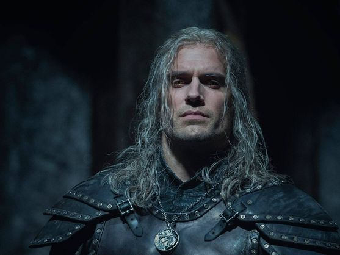

Historia / Lore
'The Witcher' ya es una de las series más exitosas de Netflix en este 2019. Adaptación de las novelas de Andrzej Sapkowski, que alcanzaron la fama mediante su adaptación al famoso videojuego, la serie nos muestra un nuevo formato (el de la pequeña pantalla en 'streaming') para la historia del brujo Geralt de Rivia (Henry Cavill), un mercenario en decadencia y en busca de su destino, que acabará pasando por las vidas de la hechicera Anya Chalotra (Anya Chalotra), que lucha por controlar sus poderes, y la princesa Ciri de Cintra (Freya Allan), una heredera real cuyo reino ha caído en desgracia. Todos viven en un mundo de fantasía lleno de magia, monstruos, guerras y profecías. Y también de una línea temporal algo confusa.
[Si quieres evitar spoilers de la temporada, deja de leer]
La serie de Netflix nos ha sorprendido en sus primeros ocho episodios, en los que la historia va dando saltos sin que nos demos cuenta. Las fechas en las que se desarrollan los eventos van variando sin previo aviso, en un camino con tres bifurcaciones (las de los tres personajes protagonistas) que acabará en el mismo punto al final de la temporada. Para entender esta línea temporal hay que tener en cuenta diversas cosas. La más importante, que el proceso de envejecimiento no es el mismo que el nuestro para todos los personajes. Geralt de Rivia empieza la historia con alrededor de 100 años de edad, y dos décadas antes de los primeros eventos que vivimos con Ciri, que es una niña humana. Yennefer, al poseer magia, también envejece más despacio.
Como podemos comprobar, las cuentas no son fáciles, pero intentaremos aclararnos. Así quedaría la cronología de esta primera temporada, según lo que descubrimos en la serie y las informaciones que Hissrich ha ido proporcionando en entrevistas a los medios, y tomando como punto de partida la caída de Cindra:
Hace 100 años o más. En el flashback del episodio 8, vemos cómo la madre de Geralt de Rivia le abandona en una escuela de entrenamiento para brujos. Es el inicio de su historia, sus orígenes.
Hace 70 años. Como vemos en el segundo episodio, una hechicera aparece en la granja donde vive Yennefer con su familia y la compra con el objetivo de ingresarla en su escuela de magia, donde podrá desarrollar todo su potencial. Es la primera vez que la vemos en la serie, y en el tercer episodio, y aún esta franja temporal, veremos cómo transforma su cuerpo (desfigurado de nacimiento por su condición de medio elfa) y se convierte en la consejera del rey Aedirn.
Hace 40 años. El cuarto episodio sigue contándonos de forma cronológica la historia de Yennefer, que ahora ha de acompañar a la Reina Kalis de Lyria y su hija en un viaje. Sin embargo, un asesino las ataca y sus protegidas mueren por mucho que intente defenderlas. La hechicera decide entonces seguir su propio camino.
Hace entre 20 y 10 años. Es en este periodo donde empieza 'The Witcher', en el episodio 1, donde vemos a Geralt de Rivia matar a Renfri y ganarse su título de Carnicero de Blaviken. A partir de aquí, su relato en la serie avanza de forma cronológica: en el episodio dos conoce a su compañero Jaskier tras el incidente con los elfos y en el cuarto ayuda a salvar la vida a Duny (padre de Ciri), ganándose su Derecho a la Sorpresa, que será el momento en que su destino se una al de Ciri, de la que la princesa Pavetta está ya embarazada.
Hace 13 años. Geralt y Yennefer se conocen en el episodio cinco, después del banquete. Aquí nos damos cuenta de lo útiles que son las canciones de Jaskier para orientarnos en la línea temporal de la serie. En el sexto episodio, no muy lejos de este momento en el tiempo, ambos personajes volverán a encontrarse para confrontar a una dragon dorado.
La caída de Cintra. Este es el evento central de la temporada, y lo que ocurre es importante para entenderlo todo. Antes de que los enemigos tomen la ciudad, Geralt vuelve para reclamar su derecho, el que ganó la última vez que se vieron: quiere a la princesa Ciri. Pero su abuela, la Reina Calanthe, no está dispuesta a entregársela, y consigue encarcelarle. Será allí donde pase la guerra entre Cintra y los Nilfgaard, donde Yennefer echará una mano en la lucha a la familia real. Todo esto ocurre en el séptimo episodio. A continuación, habría que volver el primer episodio de la serie, cuando la reina muere y Ciri escapa por los bosques. E inmediatamente de nuevo al octavo y último episodio, donde Geralt consigue escapar de prisión durante el caos, aunque es gravemente herido.
Después de la caída de Cintra. Aquí empieza el futuro de la historia. Tras el gran evento, el que conecta los caminos de los tres protagonistas, se sientan las bases para la próxima temporada. Por una parte, Ciri se ha pasado todos estos capítulos huyendo de algo que no veríamos en su plenitud hasta el final (recordemos, huye durante dos semanas). Por otra, Yennefer sigue batallando a los Nilfgaard en la Batalla de Sodden Hill y desaparece en un poderoso arranque de magia. Y por último está Geralt de Rivia, que acabará conociendo al destino al que se refería Renfri al inicio del show, a Ciri, ya que ambos acaban rescatados por dos partes del mismo matrimonio.
Lo que ocurra a partir de ahí será en la segunda temporada ...